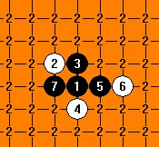

[互动棋谱]垃圾谱增补
首页
茗弈阁
#1 [互动棋谱]垃圾谱增补 作者：二十七刀 发表时间：2009-3-31 20:00:42
垃圾谱增补 27垃圾谱.rar
27垃圾谱.rar［此帖子已被 茗弈小刀 在 2009-4-22 19:20:08 编辑过］
#2 Re:垃圾谱增补 作者：wrwak 发表时间：2009-3-31 20:04:22
很多人喜欢这样下 认为白棋形成八卦不错用
#3 Re:垃圾谱增补 作者：中大五子风 发表时间：2009-4-2 14:53:06
这个茗弈是谁啊？我怎么没见过这个人？